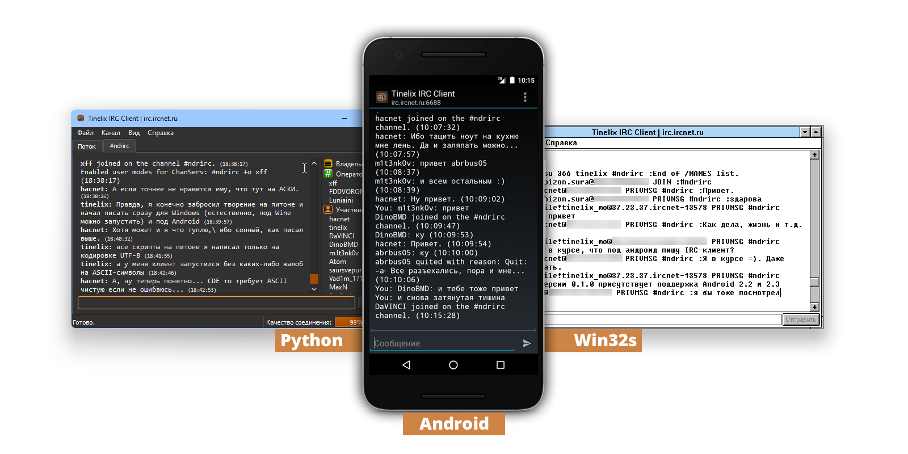
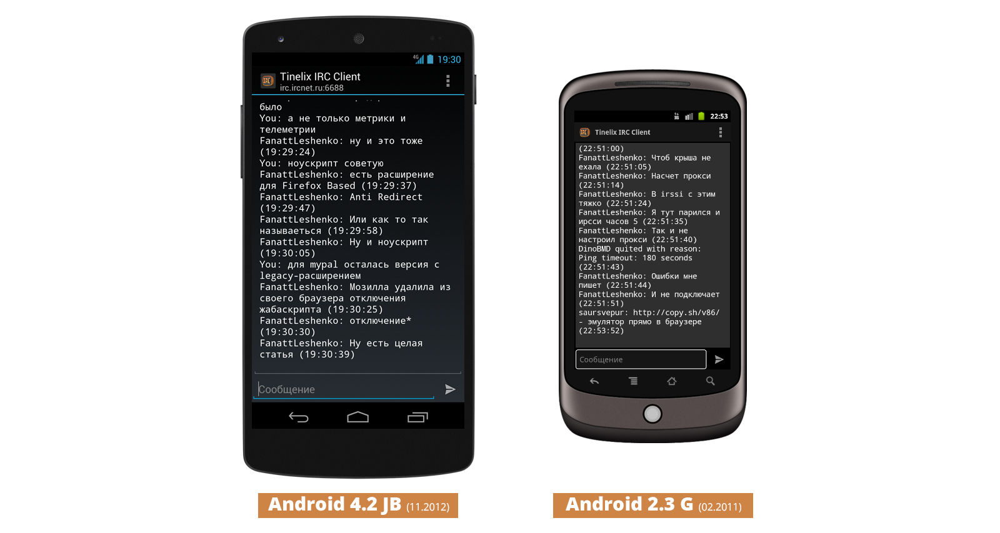

IRC расшифровывается как Internet Relay Chat. Это простой и древний протокол для общения с людьми в реальном времени. Он использует только текстовые данные и немного специфичный набор форматирования текста в отличии от Markdown и обеспечивает Socket-подключение к любым IRC-клиентам. Для этого нужно знать только базовые команды вроде PONG, JOIN, MODE, PRIVMSG и QUIT.
И раз уж я начал знакомство с сайтом http://narodweb.ru в начале лета 2021 г., в августе в моей голове появилась такая мысль о создании собственного IRC-клиента на языке программирования Python 3.x и на базе PyQt5, так как на данный момент мой коллега Владимир Баринов (Veselcraft) писал клиент для серверов Escargot на языке JavaScript для интепретатора node.js.

Что нового появилось в Tinelix IRC Client версии 0.1.2?
1. Помимо поддержки Android 2.x, которая появилась с версии 0.1.0, улучшен внешний вид приложения. Это, что касается версий Android ниже 3.0.

В какой-то степени такой дизайн отдалено напоминает интерфейс Holo, что был в Android 4.x. 2. Добавлена возможность создавать пользовательские QUIT-сообщения. 3. Исправлен баг в Profile Adapter (кастомного адаптера списков для ListView) в активности менеджера подключений 4. Добавлены уведломения о упоминаниях ника.
Win32s (Win32 subset) - прослойка совместимости программ Win32, пригодная для запуска на Windows 3.1 и Windows 3.11 для рабочих групп. Имеет массу ограничений, поэтому далеко не все Win32-программы могут быть совместимы с Win32s.